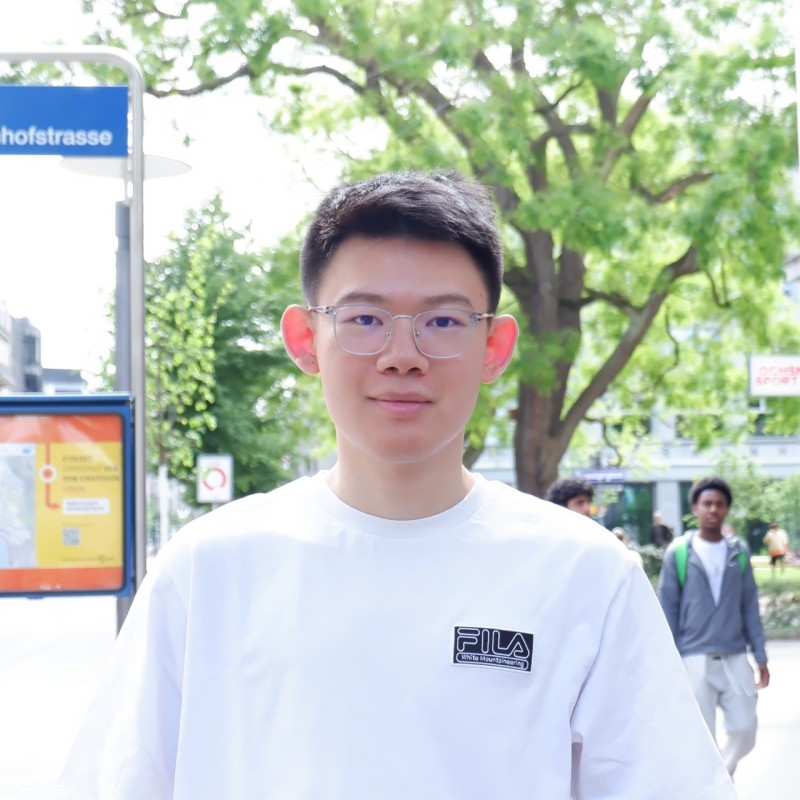

Shizheng Wen闻仕政
PhD researcher, ETH Zurich
Foundation models for physics, learned from the equations themselves.
Hi, I'm Shizheng. Today's world models learn what the physical world looks like. I build models that compute how it behaves, from the equations that govern it and with the accuracy that engineering and science require. Physics has no internet-scale corpus to learn from, so I build the full stack: infrastructure, architecture and training.
- Based at
- Seminar for Applied Mathematics, ETH Zurich, and the ETH AI Center. Advised by Prof. Siddhartha Mishra.
- Open source
- TensorMesh, GAOT, torch-sla
- Recognition
- ETH Medal, with papers at ICML, NeurIPS and ICLR
Solved live in your browser
A wave equation on a finite-element mesh, scattering off my initials. Move across it to make waves.
Selected work
2 NeurIPS, 1 ICML, 1 ICLR, ETH Medal
-
Infrastructure, ICML 2026
TensorMesh
Differentiable, GPU-native finite elements in PyTorch. It generates training data and evaluates physics losses inside the training loop.
-
Architecture, NeurIPS 2025
GAOT
A geometry-aware operator transformer: an efficient, accurate neural surrogate for PDEs on arbitrary domains.
-
Training, arXiv 2026
Preconditioned PINO
Label-free training from the governing equations alone. Multigrid preconditioning lets it match supervised accuracy.
-
January 2027Foundation model, upcoming
PDE foundation model
Where the stack comes together: one model pretrained across diverse physical systems.


News
-
Sep 2026
Publication
One paper "Preconditioned Physics-Informed Neural Operator Training" is now available on arXiv.
-
Sep 2026
Publication
One paper "Does Transolver really need a Transformer?" is now available on arXiv.
-
May 2026
Release
We open-sourced TensorMesh! A fast, differentiable, JIT-free, debugging-friendly finite element library for PyTorch.
-
May 2026
Milestone
I received the ETH Medal at my master's graduation ceremony, the highest honor for students with outstanding master's and doctoral theses.
-
May 2026
Publication
One paper "torch-sla" accepted at ICML 2026 Workshop AI4Physics.
-
Apr 2026
Publication
One paper "TensorGalerkin" accepted at ICML 2026.
-
Feb 2026
Release
We open-sourced torch-sla! A memory-efficient, differentiable sparse linear equation solver library for PyTorch with multiple backends.
-
Jan 2026
Publication
One paper "MOSIV" accepted at ICLR 2026.
- Sep 2025 Publication
-
May 2025
Milestone
Started my Ph.D. journey at the Seminar for Applied Mathematics, ETH Zurich.
-
Apr 2024
Publication
One paper "Phase-field simulation and machine learning of low-field magneto-elastocaloric effect in a multiferroic composite" accepted at International Journal of Mechanical Sciences (IJMS).
-
Nov 2023
Publication
One paper "Feature identification in complex fluid flows by convolutional neural networks" accepted at Theoretical and Applied Mechanics Letters (TAML).
-
Jul 2022
Publication
One paper "A machine learning strategy for modeling and optimal design of near-field radiative heat transfer" accepted at Applied Physics Letters (APL).
Invited talks
-
Nov 2026
Differentiable Finite Elements in PyTorch: TensorMesh and its role in operator learning University of Freiburg, hosted by Sören Bartels.
-
Sep 2026
Differentiable Physics Simulation Engine: The infrastructure for physics foundation model Hong Kong University of Science and Technology, hosted by Tianju Xue.
-
Jun 2026
Accelerating computational science: a paradigm shift from sparse-iterative solver to dense-parallel computing Beihang University, hosted by Kun Wang.
-
Mar 2026
Learning, Solving and Optimizing PDEs with TensorGalerkin: an Efficient High-Performance Galerkin Assembly Algorithm Simon Fraser University, hosted by Wuyang Chen.
-
Mar 2026
Geometry Aware Operator Transformer as an Efficient and Accurate Neural Surrogate for PDEs on Arbitrary Domains Tsinghua University, hosted by Angelica Aviles-Rivero.
-
Dec 2025
Accelerating Computational Science: From Differentiable Solvers to Geometry Aware Operator Transformers Stanford University, hosted by Charbel Farhat.
Publications
-
Preconditioned Physics-Informed Neural Operator Training
-
Does Transolver really need a Transformer?
-
Learning, Solving and Optimizing PDEs with TensorGalerkin: an efficient high-performance Galerkin assembly algorithm
-
torch-sla: Differentiable Sparse Linear Algebra with Adjoint Solvers and Sparse Tensor Parallelism for PyTorch
-
MOSIV: Multi-Object System Identification from Videos
-
Geometry Aware Operator Transformer as an Efficient and Accurate Neural Surrogate for PDEs on Arbitrary Domains
-
RIGNO: A Graph-based framework for robust and accurate operator learning for PDEs on arbitrary domains
-
Phase-field simulation and machine learning of low-field magneto-elastocaloric effect in a multiferroic composite
-
Feature Identification in Complex Fluid Flows by Convolutional Neural Networks
-
A machine learning strategy for modeling and optimal design of near-field radiative heat transfer
-
High-performance three-body near-field thermophotovoltaic energy conversion
-
Ultrahigh thermal rectification based on near-field thermal radiation between dissimilar nanoparticles
* Equal contribution.
Awards
- ICML Gold Reviewer 2026
- ETH Medal (top 2.5%) 2026
- National Scholarship (top 1%) 2019
- NUAA Presidential Fellowship (top 0.1%) 2019
Teaching
-
AI in the Sciences and Engineering (6 ECTS)
-
Numerical Methods for Partial Differential Equations (10 ECTS)
Service
- Reviewer: ICLR, NeurIPS, ICML, AAAI, IJCAI, TMLR, Nature Machine Intelligence, ACM Transactions on Graphics, Computer Methods in Applied Mechanics and Engineering